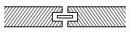
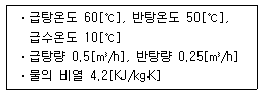
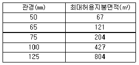
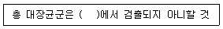
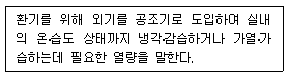
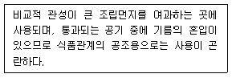
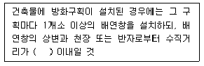
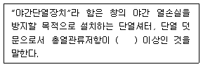
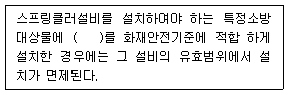

건축설비산업기사 (2014-03-02 기출문제)
1과목: 건축일반
1. 병원의 기능에 따라 건물의 배치가 집중식으로 되는 요인에 해당되지 않는 것은?
- 부지의 협소화
- 종합진찰의 기능 구성
- 장애자 특수 시설의 수용
- 건축의 설비와 구조의 발달
(정답률: 85%)

2. 학교의 교사 배치 유형 중 분산 병렬형에 대한 설명으로 옳지 않은 것은?
- 좁은 대지에 적합하다.
- 일조, 통풍 등 교실의 환경 조건이 균등하다.
- 구조계획이 간단하다.
- 편복도로 할 경우 복도 면적이 커지고 단조로워 유기적인 구성을 취하기가 어렵다.
(정답률: 77%)
3. 무량판 구조(flat slab)의 장점이 아닌 것은?
- 실내 이용률이 높다.
- 충고를 줄일 수 있다.
- 공사비가 저렴하다.
- 구조체의 자중이 가볍다.
(정답률: 65%)
4. 사무소건축에 있어서 기준층의 층고 결정과 가장 관계가 먼 것은?
- 건물의 높이제한과 층수
- 채광
- 엘리베이터의 대수
- 냉난방설비의 덕트
(정답률: 93%)
5. 사무소 건축에서 코어시스템(core system)을 채용하는 이유로 옳지 않은 것은?
- 독립성 보장
- 구조적 이점
- 설비비 절약
- 사용상 편리
(정답률: 88%)
6. 상점 건축에서 진열창(show window)에 대한 설명 중 옳지 않은 것은?
- 진열창 내부 조명은 전반조명과 국부조명을 사용한다.
- 진열창의 바닥 높이는 시계, 귀금속 등의 경우 높게 한다.
- 진열창의 흐림 방지를 위해 진열창의 외기가 통하지 않도록 한다.
- 진열창의 반사 방지를 위해 진열창 내의 밝기를 외부보다 더 밝게 한다.
(정답률: 84%)
7. 일조계획에서 인동간격 결정에 요구되는 최소 일조 시간은?
- 1시간
- 2시간
- 4시간
- 6시간
(정답률: 83%)
8. 조립식 구조(precast concrete)의 특징으로 옳지 않은 것은?
- 연결부위의 응력 전달이 확실하다.
- 환경의 영향을 덜 받는다.
- 시공 속도가 개선된다.
- 대량 생산으로 품질이 향상된다.
(정답률: 83%)
9. 상점에서 측면판매에 대한 설명 중 옳지 않은 것은?
- 상품이 손에 잡혀서 충동구매가 이루어질 수 있다.
- 판매원의 정위치를 정하기 어렵고 불안정하다.
- 진열면적이 커지고 상품에 친근감이 있다.
- 포장이 편리하며 시계, 귀금속, 카메라 상점에서 일반적으로 사용된다.
(정답률: 90%)
10. 사무소 계획에서 사무실의 크기를 결정하는 가장 중요한 요소는?
- 사무원의 수
- 서류함, 책상 등의 비품
- 사무의 종류
- 방문객의 수나 사무실의 위치
(정답률: 93%)
11. 철골구조의 주각부에 사용되지 않는 것은?
- 윙 플레이트
- 커버 플레이트
- 사이드 앵글
- 클립 앵글
(정답률: 75%)
12. 한식기와에서 내림새는 주로 어디에 사용되는가?
- 착고막이 끝부분에
- 암기와 끝부분에
- 숫기와 끝부분에
- 용마루 끝부분에
(정답률: 66%)
13. 상점건축의 동선계획 중 옳지 않은 것은?
- 고객동선이란 고객이 상점 내부로 유입되는 동선이다.
- 직원동선과 고객동선이 만나지 않는 한적한 곳에 카운터를 배치한다.
- 직원동선과 상품동선은 장소에 따라 교차되는 동선이다.
- 고객동선과 상품출입 동선은 가능한 분리한다.
(정답률: 80%)
14. 상하플랜지에 ㄱ형강을 쓰고 웨브재를 일정한 각도로 접합한 철골 조립보는?
- 판보
- 형강보
- 래티스보
- 허니컴보
(정답률: 82%)
15. 주택의 평면계획에 관한 설명 중 옳은 것은?
- 노인 침실은 조용하여야 하므로 주택에서 가장 은밀한 곳에 배치한다.
- 현관의 위치는 대지의 형태와 도로와의 관계 등에 의해 결정된다.
- 거실은 남북방향으로 길게 하는 것이 일조 및 채광상 유리하다.
- 침실의 출입문은 침대가 직접 보이지 않도록 밖여닫이로 하는 것이 좋다.
(정답률: 75%)
16. 철골구조물의 슬래브 거푸집으로 가장 적당한 것은?
- 유로폼(euroo form)
- 데크플레이트(deck plate)
- 슬립폼(slip form)
- 테이블폼(table form)
(정답률: 76%)
17. 도서관의 자유개가식에 관한 설명 중 옳지 않은 것은?
- 서가의 정리가 잘 안되면 혼란이 야기된다.
- 책 선택 시 대출기록 제출이 없다.
- 자유로이 책의 내용을 보고 필요한 책을 정확히 고를수 있다.
- 책이 마모, 망실되는 사고가 적다.
(정답률: 90%)
18. 그림과 같은 마루널 쪽매의 명칭은?

- 딴혀쪽매
- 반턱쪽매
- 오늬쪽매
- 엇빗쪽매
(정답률: 82%)
19. 열려진 철제 여닫이 문을 저절로 닫히게 하는 장치는?
- 도어체크
- 도어스톱
- 지도리
- 크레센트
(정답률: 93%)
20. 학교의 운영방식 중 학급, 학생 구분을 없애고 학생들이 각자의 능력에 맞게 교과를 선택하는 방식은?
- 플래툰형(P형)
- 달톤형(D형)
- 종합교실형(U형)
- 교과교실형(V형)
(정답률: 79%)
2과목: 위생설비
21. 고압배관과 저압배관 사이에 설치하여 저압측의 증기 사용량의 증감에 관계없이 또는 고압측 압력의 변동에 관계없이 밸브의 리프트를 자동적으로 조절하여 증기유량과 저압 측의 압력을 일정하게 유지하는 작용을 하는 밸브는?
- 감압밸브
- 역지밸브
- 게이트밸브
- 온도조절밸브
(정답률: 71%)
22. 다음과 같은 조건에서 급탕을 위해 필요한 직접 가열량은?

- 10,500[kJ/h]
- 15,000[kJ/h]
- 52,500[kJ/h]
- 63,000[kJ/h]
(정답률: 33%)
23. 도시가스 배관 중 지상배관의 표면색상은 원칙적으로 어떤 색으로 하는가?
- 적색
- 황색
- 청색
- 녹색
(정답률: 94%)
24. 다음 중 기구급수 부하단위가 가장 큰 것은? (단, 공중용인 경우)
- 세면기
- 세정탱크식 대변기
- 세정탱크식 소변기
- 세정밸브식 대변기
(정답률: 81%)
25. 다음 중 동일한 직경의 강관을 직선 연결할 때 사용되는 강관 이음쇠가 아닌 것은?
- 소켓
- 니플
- 플러그
- 유니온
(정답률: 68%)
26. 건축물 지붕의 수평투영 면적이 600[m2]인 경우, 4개의 우수수직관을 설치하고자 한다. 최대 강우량이 130[mm/h]일 때 우수수직관의 관경으로 가장 적당한 것은? (단, 허용최대 지붕면적은 강우량이 100[mm/h]일 경우이다.)

- 65[mm]
- 75[mm]
- 100[mm]
- 125[mm]
(정답률: 82%)
27. 배수트랩 중 사이폰 트랩에 해당하는 것은?
- U 트랩
- 벨 트랩
- 드럼 트랩
- 플로트 트랩
(정답률: 85%)
28. 건물의 급수량 결정과 관계가 없는 것은?
- 건물의 연면적
- 건물의 대지면적
- 설치된 위생기구수
- 건물의 급수 대상 인원수
(정답률: 83%)
29. 배수관의 최소관경에 관한 설명으로 옳지 않은 것은?
- 배수관은 배수의 유하방향으로 관경을 축소해서는 안된다.
- 지중에 매설하는 배수관의 관경은 최소 25[mm] 이상으로 하여야 한다.
- 기구배수관의 관경은 이것에 접속하는 위생기구의 트랩구경 이상으로 한다.
- 배수수직관의 관경은 이것에 접속하는 배수수평지관의 최대관경 이상으로 한다.
(정답률: 80%)
30. 옥외소화전의 설치개수가 3개인 경우, 옥외소화전설비의 수원의 저수량은 최소 얼마 이상이 되도록 하여야 하는가?
- 4.8[m3]
- 7.8[m3]
- 14[m3]
- 21[m3]
(정답률: 73%)
31. 다음 중 주철관의 접합 방법에 해당하는 것은?
- 나사 접합
- 용접 접합
- 납땜 접합
- 메커니컬 접합
(정답률: 85%)
32. 다음 중 압력배관용 탄소강관의 스케줄 번호와 가장 관계가 깊은 것은?
- 관의 내경
- 관의 외경
- 관의 길이
- 관의 두께
(정답률: 90%)
33. 대변기의 세정방식에 관한 설명으로 옳지 않은 것은?
- 로 탱크식은 일반 가정용으로 널리 사용된다.
- 하이 탱크식은 로 탱크식에 비해 세정소음이 작다.
- 하이 탱크식은 로 탱크식에 비해 화장실 면적을 다소 넓게 사용할 수 있는 장점이 있다.
- 플러시 밸브식은 사용빈도가 많거나 일시적으로 많은 사람들이 연속하여 사용하는 경우 등에 사용된다.
(정답률: 82%)
34. 최대 방수구역에 설치된 스프링클러헤드의 개수가 30개인 경우, 스프링클러설비의 수원의 저수량은 최소 얼마 이상이 되도록 하여야 하는가? (단, 개방형 스프링클러헤드를 사용하는 경우)
- 16[m3]
- 32[m3]
- 45[m3]
- 48[m3]
(정답률: 73%)
35. 생활배수와 같은 유기성 오수에 포함된 오염물질의 양과 질에 대한 지표로 일반적으로 이용되는 것은?
- pH
- DO
- BOD
- 총질소
(정답률: 85%)
36. 급수방식 중 압력탱크방식에 관한 설명으로 옳지 않은 것은?
- 정전시에도 급수가 가능하다.
- 급수 공급 압력의 변화가 심하다.
- 일반적으로 상향급수 배관방식이 사용된다.
- 고가탱크방식을 적용하기 어려운 경우에 사용된다.
(정답률: 74%)
37. 다음과 같은 25[mm] 관의 부속이 있다. 국부저항이 가장 큰 것은?
- 니플
- 플랜지
- 슬루스밸브
- 글로브밸브
(정답률: 69%)
38. 중앙식 급탕방식 중 직접가열식 급탕방법에 관한 설명으로 옳지 않은 것은?
- 저탕조의 구조가 간단하다.
- 급탕온도가 고르지 않게 될 경우가 있다.
- 보일러 내부에 스케일이 발생하지 않는다.
- 저탕조와 보일러를 직결하여 순환가열하는 것이다.
(정답률: 79%)
39. 다음은 먹는 물 중 수돗물의 수질 기준에 관한 내용이다. ( ) 안에 알맞은 것은?

- 50[mL]
- 100[mL]
- 150[mL]
- 200[mL]
(정답률: 75%)
40. 다음 중 급수설비에서 수격작용의 발생이 가장 우려되는 경우는?
- 급수관의 지름이 클 경우
- 물을 과도하게 사용할 경우
- 급수관내의 유속이 느릴 경우
- 급수관내에서 물의 흐름을 갑자기 정지할 경우
(정답률: 91%)
3과목: 공기조화설비
41. 공기조화방식 중 이중덕트방식에 관한 설명으로 옳지 않은 것은?
- 혼합상자에서 소음과 진동이 생길 수 있다.
- 각 실에 수배관으로 인한 누수의 우려가 있다.
- 부하특성이 다른 다수의 실이나 존에도 적용할 수 있다.
- 실의 설계변경이나 완성 후 용도변경에도 쉽게 대처 할 수 있다.
(정답률: 64%)
42. 송풍량 300[m3/min], 정압 30[mmAq]인 송풍기의 회전수를 높여 풍량을 360[m3/min]로 변화시킬 경우 정압은?
- 36[mmAq]
- 43.2[mmAq]
- 51.8[mmAq]
- 64.6[mmAq]
(정답률: 57%)
43. 보일러의 출력 표시방법 중 난방부하, 급탕부하, 배관부하, 예열부하의 합으로 나타내는 것은?
- 정미출력
- 정격출력
- 상용출력
- 과부하출력
(정답률: 72%)
44. 냉방부하 계산시 현열과 잠열을 동시에 보유하고 있는 부하 인자가 아닌 것은?
- 인체부하
- 외기부하
- 조명기구부하
- 틈새바람부하
(정답률: 84%)
45. 팽창탱크의 기능에 관한 설명으로 옳지 않은 것은?
- 장치내의 온도변화에 따른 물의 체적변화를 흡수한다.
- 팽창된 물의 배출을 방지하여 장치의 열손실을 방지한다.
- 장치의 휴지 중에도 배관계를 일정압력 이상으로 유지한다.
- 밀폐식 팽창탱크에 있어서는 장치 내의 주된 공기배출구로 이용된다.
(정답률: 61%)
46. 온수난방을 하는 어떤 사무실의 손실열량이 21,000[W]인 경우 온수 순환량은? (단, 온수입구온도 82[℃], 온수출구온도 70[℃], 실내온도 22[℃], 물의 비열 4.2[kJ/kg ㆍ K], 물의 밀도 1[kg/L])
- 500[L/h]
- 800[L/h]
- 1,500[L/h]
- 2,500[L/h]
(정답률: 67%)
47. 다음 중 공기조화부하 계산에 사용되는 유리의 차폐계수가 가장 큰 것은? (단, 내부 블라인드가 없는 경우)
- 두께 3[mm] 보통유리
- 두께 3[mm] 흡열유리
- 두께 5[mm] 보통유리
- 두께 5[mm] 흡열유리
(정답률: 79%)
48. 공기조화의 4요소에 속하지 않는 것은?
- 기류
- 습도
- 복사
- 청정도
(정답률: 72%)
49. 공기조화배관의 배관회로방식에 관한 설명으로 옳지 않은 것은?
- 개방회로방식에서는 펌프의 양정에 실양정이 포함된다.
- 개방회로방식은 개방식 냉각탑의 냉각수배관 등에 응용된다.
- 개방회로방식에는 물의 팽창을 위한 팽창탱크를 반드시 갖추어야 한다.
- 밀폐회로방식에서는 순환수가 공기와 접촉하지 않으므로 물처리비가 적게 든다.
(정답률: 85%)
50. 다음 중 업무용 건물에서 독립된 환기의 필요성이 가장 낮은 곳은?
- 복도
- 주차장
- 화장실
- 급탕실
(정답률: 77%)
51. 취출구에 관한 설명으로 옳지 않은 것은?
- 팬(pan)형은 유인비 및 소음발생이 적다.
- 아네모스탯형은 1차공기에 의한 2차공기의 유인성능이 좋다.
- 노즐형은 소음이 크기 때문에 취출풍속을 5m/s 이하로 하여 사용된다.
- 브리즈 라인형은 선의 개념을 통하여 인테리어 디자인에서 미적인 감각을 살릴 수 있다.
(정답률: 76%)
52. 인체의 온열감각에 영향을 미치는 물리적 온열 4요소에 해당하지 않는 것은?
- 기온
- 습도
- 복사열
- 열관류
(정답률: 78%)
53. 다음 설명에 알맞은 공기조화부하와 관련된 용어는?

- 외기부하
- 열원부하
- 공조기부하
- 예냉 ㆍ 예열부하
(정답률: 69%)
54. 다음이 공기조화방식 중 전공기방식에 해당하는 것은?
- 유인 유닛방식
- 멀티존 유닛방식
- 패키지 유닛방식
- 팬코일 유닛방식
(정답률: 58%)
55. 대향익형 루버댐퍼에 관한 설명으로 옳지 않은 것은?
- 풍량조절용으로 사용된다.
- 압력손실이 평행익형보다 크다.
- 댐퍼를 닫으면 공기의 누설이 없다.
- 여러 장의 날개가 서로 링키지(linkage)되어 있다.
(정답률: 68%)
56. 다음의 송풍기 풍량제어법 중 축동력이 가장 많이 소요되는 것은?
- 회전수제어
- 흡입베인제어
- 흡입댐퍼제어
- 토출댐퍼제어
(정답률: 82%)
57. 다음 중 각 실의 개별제어성이 가장 우수한 덕트 배치 방식은?
- 간선덕트(천장취출)
- 간선덕트(벽취출)
- 개별덕트(천장취출)
- 환상덕트(벽취출)
(정답률: 80%)
58. 다음 설명에 알맞은 공조용 에어필터의 종류는?

- 전기식
- 건성 여과식
- 충돌 점착식
- 활성탄 흡착식
(정답률: 70%)
59. 냉각탑에서 응축기로 물을 보내기 위한 배관의 명칭은?
- 냉각수 공급관
- 냉각수 환수관
- 냉수 공급관
- 냉수 환수관
(정답률: 77%)
60. 진공환수시 방열기보다 높은 곳에 환수횡주관을 배관하거나, 환수주관보다 높은 위치에 진공펌프를 설치하는 경우 환수관의 응축수를 끌어올리기 위해 사용하는 것은?
- 팽창관
- 증발탱크
- 리프트 이음
- 응축수 트랩
(정답률: 80%)
4과목: 건축설비관계법규
61. 숙박시설은 층수가 최소 몇 층 이상인 경우 모든 층에 스프링클러설비를 설치하여야 하는가?
- 5층
- 7층
- 9층
- 11층
(정답률: 57%)
62. 소방관리의 권원이 분리된 다음의 소방대상물 중 공동소방안전관리자를 선임하여야 하는 특정소방대상물에 해당하지 않는 것은?
- 지하가
- 복합건축물로서 층수가 3층인 것
- 판매시설 중 도매시장 및 소매시장
- 지하층을 제외한 층수가 11층인 고층건축물
(정답률: 70%)
63. 연면적이 2,000[m2]인 숙박시설에 중앙집중 냉방설비를 설치하고자 하는 경우, 해당 건축물에 소요되는 주간 최대냉방부하의 최소 얼마 이상을 수용할 수 있는 용량의 축냉식 또는 가스를 이용한 중앙집중 냉방방식으로 설치하여야 하는가?
- 45% 이상
- 50% 이상
- 55% 이상
- 60% 이상
(정답률: 75%)
64. 기존 건축물이 재난으로 인하여 멸실된 대지 안에 종전의 기존 건축물 규모의 범위를 초과하여 다시 축조하는 건축 행위는?
- 신축
- 증축
- 개축
- 재축
(정답률: 70%)
65. 다음은 배연설비의 설치에 관한 기준 내용이다. ( ) 안에 알맞은 것은?

- 0.5[m]
- 0.6[m]
- 0.9[m]
- 1.2[m]
(정답률: 60%)
66. 건축법령상 숙박시설에 속하지 않는 것은?
- 호스텔
- 유스호스텔
- 의료관광호텔
- 휴양콘도미니엄
(정답률: 82%)
67. 다음 소방시설 중 소화설비에 속하는 것은?
- 소화수조
- 옥외소화전설비
- 연결송수관설비
- 자동화재탐지설비
(정답률: 65%)
68. 소화기를 설치하여야 하는 특정소방대상물의 연면적 기준은?
- 10[m2] 이상
- 33[m2] 이상
- 50[m2] 이상
- 100[m2] 이상
(정답률: 82%)
69. 상수도소화용수설비를 설치하여야 하는 특정소방대상물의 연면적 기준은?
- 500[m2] 이상
- 1,000[m2] 이상
- 2,000[m2] 이상
- 5,000[m2] 이상
(정답률: 64%)
70. 바닥면적이 800[m2]인 공동주택의 거실에 환기를 위해 설치하여야 하는 창문 등의 최소 면적은? (단, 기계환기장치 및 중앙관리방식의 공기조화설비를 설치하지 않은 경우)
- 10[m2]
- 20[m2]
- 40[m2]
- 80[m2]
(정답률: 75%)
71. 다음은 건축물의 에너지절약설계기준에 따른 야간단 열장치의 용어 정의이다. ( ) 안에 알맞은 내용은?

- 0.1[m2 ㆍ K/W]
- 0.2[m2 ㆍ K/W]
- 0.3[m2 ㆍ K/W]
- 0.4[m2 ㆍ K/W]
(정답률: 87%)
72. 건축물의 냉방설비에 대한 설치 및 설계기준상 통계적으로 연중 최대냉방부하를 갖는 날을 기준으로 기타시간에 필요한 냉방열량 중에서 이용이 가능한 냉열량이 차지하는 비율로 정의되는 것은?
- 축열률
- 냉방률
- 수용률
- 이용률
(정답률: 87%)
73. 다음 중 피난 용도로 쓸 수 있는 광장을 옥상에 설치하여야 하는 대상 건축물은?
- 5층 이상인 층이 판매시설의 용도로 사용되는 건축물
- 5층 이상인 층이 공동주택의 용도로 사용되는 건축물
- 5층 이상인 층이 의료시설 중 병원의 용도로 사용되는 건축물
- 5층 이상인 층이 위락시설 중 무도학원의 용도로 사용되는 건축물
(정답률: 68%)
74. 비상용 승강기를 설치하여야 하는 건축물의 높이 기준은?
- 31[m] 초과
- 31[m] 이상
- 41[m] 초과
- 41[m] 이상
(정답률: 56%)
75. 6층 이상의 거실면적의 합계가 3,000[m2]인 경우, 승용승강기를 최소 2대 이상 설치하여야 하는 건축물의 용도는? (단, 8인승 승용승강기를 사용하는 경우)
- 의료시설
- 업무시설
- 숙박시설
- 교육연구시설
(정답률: 86%)
76. 건축물의 출입구에 설치하는 회전문은 계단이나 에스컬레이터로부터 최소 얼마 이상의 거리를 두어야 하는가?
- 2[m]
- 3[m]
- 4[m]
- 5[m]
(정답률: 83%)
77. 건축법령상 다중이용 건축물에 속하지 않는 것은?
- 16층 이상인 건축물
- 종교시설의 용도로 쓰는 바닥면적의 합계가 5,000[m2] 이상인 건축물
- 판매시설의 용도로 쓰는 바닥면적의 합계가 5,000[m2] 이상인 건축물
- 업무시설의 용도로 쓰는 바닥면적의 합계가 5,000[m2] 이상인 건축물
(정답률: 73%)
78. 건축물에 설치하는 지하층의 구조 및 설비에 관한 기준 내용으로 옳지 않은 것은?
- 비상탈출구는 출입구로부터 3[m] 이상 떨어진 곳에 설치할 것
- 비상탈출구의 유효너비는 0.75[m] 이상, 유효높이는 1.5[m] 이상으로 할 것
- 거실바닥면적의 합계가 1,000[m2] 이상인 층에는 환기설비를 설치할 것
- 바닥면적이 300[m2] 이상인 층에는 식수공급을 위한 급수전을 최소 2개소 이상 설치할 것
(정답률: 65%)
79. 방화구획을 설치하여야 하는 건축물이 있다. 이 건축물 11층에 적용되는 방화구획 설치 기준으로 옳은 것은? (단, 실내의 마감을 불연재료로 하고 스프링클러설비를 설치한 경우)
- 바닥면적 200[m2] 이내마다 구획할 것
- 바닥면적 500[m2] 이내마다 구획할 것
- 바닥면적 600[m2] 이내마다 구획할 것
- 바닥면적 1,500[m2] 이내마다 구획할 것
(정답률: 52%)
80. 다음의 스프링클러설비의 관한 설명 중 ( ) 안에 알맞은 것은?

- 옥내소화전설비
- 연결송수관설비
- 물분무등소화설비
- 상수도소화용수설비
(정답률: 88%)